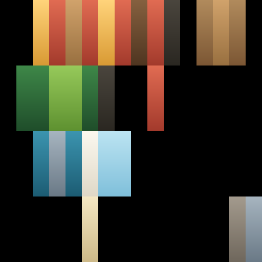

<!doctype html>
<meta charset="utf-8">
<title>Kleurmap-vergelijking</title>
<style>
  html, body { margin: 0; background: #f4f1ea; color: #2a2620;
    font: 15px/1.45 system-ui, -apple-system, "Segoe UI", sans-serif; }
  #blad { width: 1880px; padding: 28px 24px 32px; box-sizing: border-box; }
  h1 { margin: 0 0 4px; font-size: 26px; }
  p.uitleg { margin: 0 0 18px; max-width: 900px; color: #57503f; }
  .atlassen { display: flex; gap: 24px; margin: 0 0 26px; align-items: flex-start; }
  .atlassen figure { margin: 0; }
  .atlassen img { width: 220px; height: 220px; image-rendering: pixelated;
    border: 1px solid #cfc7b4; display: block; }
  figcaption { margin-top: 6px; font-size: 13px; font-weight: 600; }
  .raster { display: grid; grid-template-columns: repeat(4, 1fr); gap: 14px; }
  .kaart { background: #fffdf8; border: 1px solid #ddd5c3; border-radius: 8px;
    padding: 10px 10px 8px; }
  .kaart h2 { margin: 0 0 6px; font-size: 15px; font-weight: 600; }
  .kaart .id { font-weight: 400; color: #8a8271; font-size: 12px; }
  .paar { display: flex; gap: 8px; }
  .paar figure { margin: 0; flex: 1; }
  .paar img { width: 100%; display: block; border-radius: 4px; background: #efece5; }
  .paar figcaption { margin-top: 3px; font-size: 11px; letter-spacing: .04em;
    text-transform: uppercase; color: #8a8271; text-align: center; }
</style>
<script type="importmap">
{"imports":{"three":"/three/build/three.module.js","three/addons/":"/three/examples/jsm/"}}
</script>
<body>
<div id="blad"></div>
<script type="module">
/* Rendert elke prop uit props.json twee keer: één keer met de atlas die de kit
 * zelf meedraagt (kits/colormap.png) en één keer met colormap-v2.png ernaast.
 * Beide renders delen scène, licht en camera, zodat alleen de textuur verschilt.
 * Wordt aangestuurd door render.mjs, die het blad als PNG wegschrijft. */
addEventListener('error', () => { window.FOUT = true; });
addEventListener('unhandledrejection', () => { window.FOUT = true; });

import * as THREE from 'three';
import { GLTFLoader } from 'three/addons/loaders/GLTFLoader.js';

const TEGEL = 214;          /* weergavegrootte van één thumbnail in px */
const SCHAAL = 2;           /* rendert op het dubbele voor scherpe randen */

const renderer = new THREE.WebGLRenderer({ antialias: true, alpha: false,
  preserveDrawingBuffer: true });
renderer.setPixelRatio(1);
renderer.setSize(TEGEL * SCHAAL, TEGEL * SCHAAL);
renderer.outputColorSpace = THREE.SRGBColorSpace;

const scene = new THREE.Scene();
scene.background = new THREE.Color(0xefece5);
scene.add(new THREE.HemisphereLight(0xffffff, 0x887766, 1.4));
const zon = new THREE.DirectionalLight(0xffffff, 1.6);
zon.position.set(3, 6, 5);
scene.add(zon);

const loader = new GLTFLoader();
const laad = (p) => new Promise((res, rej) => loader.load(p, res, undefined, rej));

/* De kandidaat-atlas als los beeld; per materiaal wordt straks een kopie van de
 * oorspronkelijke textuur gemaakt die naar dit beeld wijst, zodat filtering,
 * wrap-instellingen en kleurruimte precies gelijk blijven. */
const v2Beeld = await new Promise((res, rej) => {
  const img = new Image();
  img.onload = () => res(img);
  img.onerror = rej;
  img.src = './colormap-v2.png';
});

function zetV2Atlas(obj) {
  const vertaald = new Map();
  obj.traverse((kind) => {
    if (!kind.isMesh) return;
    const materialen = Array.isArray(kind.material) ? kind.material : [kind.material];
    const nieuw = materialen.map((mat) => {
      if (!mat.map) return mat;
      if (!vertaald.has(mat)) {
        const kopie = mat.clone();
        const tex = mat.map.clone();
        tex.source = new THREE.Source(v2Beeld);
        tex.needsUpdate = true;
        kopie.map = tex;
        vertaald.set(mat, kopie);
      }
      return vertaald.get(mat);
    });
    kind.material = Array.isArray(kind.material) ? nieuw : nieuw[0];
  });
}

/* Eén orthografische driekwartblik, per model op de bounding box gepast, zodat
 * beide renders van een prop exact dezelfde uitsnede hebben. */
function camera(obj) {
  const box = new THREE.Box3().setFromObject(obj);
  const midden = box.getCenter(new THREE.Vector3());
  const straal = box.getSize(new THREE.Vector3()).length() / 2;
  const h = straal * 1.12;
  const cam = new THREE.OrthographicCamera(-h, h, h, -h, 0.01, straal * 40 + 100);
  const richting = new THREE.Vector3(1, 0.72, 1.35).normalize();
  cam.position.copy(midden).addScaledVector(richting, straal * 8 + 5);
  cam.lookAt(midden);
  return cam;
}

function schiet(obj) {
  scene.add(obj);
  renderer.render(scene, camera(obj));
  const data = renderer.domElement.toDataURL('image/png');
  scene.remove(obj);
  return data;
}

const lijst = await (await fetch('./props.json')).json();
const blad = document.getElementById('blad');
blad.innerHTML = `
  <h1>Props op de huidige colormap en op atlas v2</h1>
  <p class="uitleg">Veertig modellen uit de kits die het gedeelde palet gebruiken, samen goed voor
  elke gevulde cel van de atlas. Links de kleuren zoals ze nu in de repo staan, rechts dezelfde
  modellen met <code>colormap-v2.png</code> als textuur. De modellen, het licht en de camera zijn
  identiek; alleen de atlas verschilt.</p>
  <div class="atlassen">
    <figure><figcaption>huidig — kits/colormap.png</figcaption></figure>
    <figure><figcaption>voorstel — colormap-v2.png</figcaption></figure>
  </div>
  <div class="raster" id="raster"></div>`;
const raster = document.getElementById('raster');

for (const prop of lijst.props) {
  const gltf = await laad('/kits/' + prop.id + '.glb');
  const huidig = gltf.scene;
  const v2 = huidig.clone(true);
  zetV2Atlas(v2);

  const kaart = document.createElement('div');
  kaart.className = 'kaart';
  kaart.innerHTML = `<h2>${prop.label} <span class="id">${prop.id}</span></h2>
    <div class="paar">
      <figure><figcaption>huidig</figcaption></figure>
      <figure><figcaption>atlas v2</figcaption></figure>
    </div>`;
  raster.appendChild(kaart);
}

await new Promise((r) => requestAnimationFrame(() => requestAnimationFrame(r)));
document.title = 'KLAAR:' + lijst.props.length;
window.KLAAR = true;
</script>
